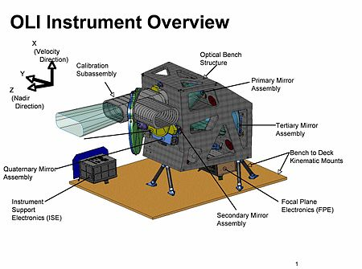
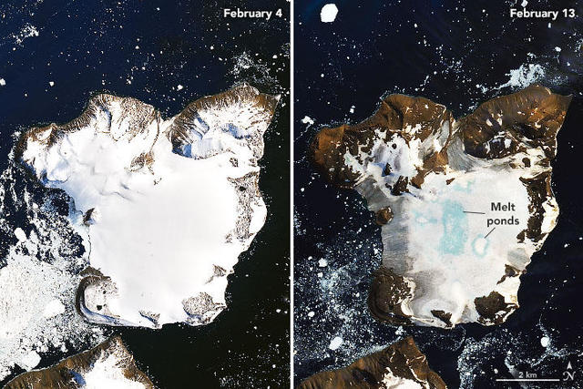
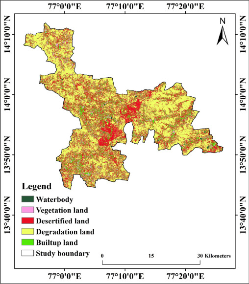
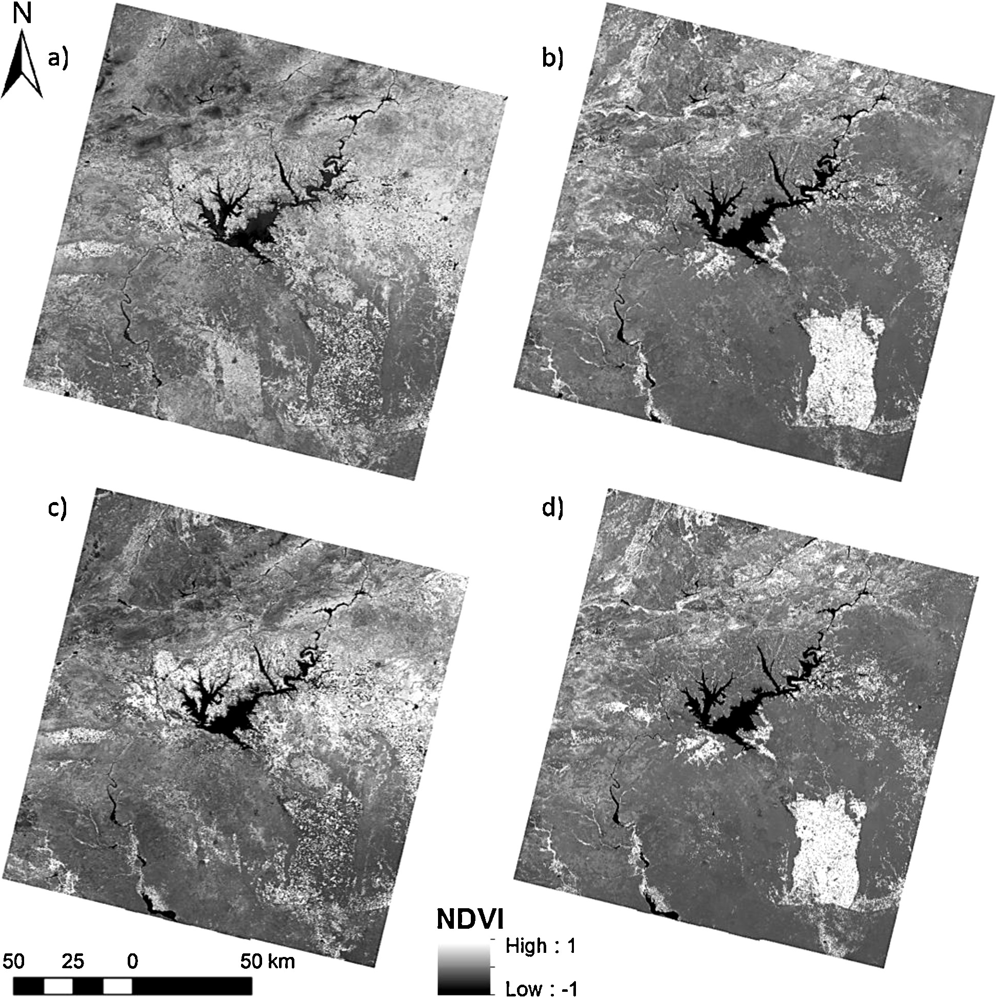

class: inverse
background-image: url(images/AdobeStock_251166908-scaled.jpeg)
```{r setup, include=FALSE}
options(htmltools.dir.version = FALSE)
```
# Summary: Overview
Operational Land Imager (OLI) is an sensor that is used on Landsat 8 and Landsat 9 satellites built by the Ball Aerospace & Technologies Corporation (NASA, 2021).
* It is a push broom type of sensor that plays a crucial role in Earth observation and remote sensing.
* It has a five-year design life.
* The entire Earth falls within view once every 16 days.
---
# Summary: How does it work?
It measures in the visible, near infrared, and short wave infrared portions of the spectrum as well as a panchromatic band (Knight & Kvaran, 2014).
* Its images have 30-meter multi-spectral spatial resolutions along a 185 km wide swath, covering wide areas of the Earth’s landscape while providing sufficient resolution to distinguish features like urban centers, farms, forests and other land uses
* It has a four-mirror telescope and 12-bit quantization

OLI Design.(Image: NASA)
---
# Summary: Push Broom Scanner
A push broom scanner (an along-track scanner), is a device that captures images with the use of spectroscopic sensors (Middlebury Remote Sensing, 2020).
#### Advantages
* A significant advantage of push broom scanners over whisk broom scanners is their ability to gather more light by focusing on a specific area for an extended period, like a long exposure on a camera.
This feature is particularly beneficial for capturing images under difficult lighting conditions and for observing subtle features on the Earth's surface.
#### Challenges
* Sensitivity of the individual detectors - this variance can affect image uniformity and quality, requiring calibration and correction during image processing.
* Resolution is lower than a whisk broom scanner because the entire image is captured at once.
---
# Applications
The images and data that OLI has helped collect have practical applications today in:
* environmental monitoring (e.g. monitoring changes in snow, ice, and water)
* urban planning
* disaster management
* agriculture

Change in the amount of ice and snow in nine days in Antarctica (Image: NASA))
---
# Applications: Environmental Monitoring
In study by Kumar et al. (2022) Landsat 8 OLI was used to calculate the ground surface temperature in order to assess land degradation. Precisely, this study develops an algorithm using the observed thermal radiance of the LANDSAT 8 TIRS Band 10. Researchers were able to estimate how much of area is degradation lands, vegetation lands, built-up lands, desertified lands and water bodies.

Land degradation and desertification map of the study area. (Kumar et al., 2022)
---
# Applications: Urban Planning
OLI can support urban planners in mapping city growth, land use changes, and infrastructure development.
For example, a study by Khallef et al. (2020) analyzes the urban heat islands of the city of Guelma. Thanks to the use of data from Landsat 8, researchers were able to detect which parts of the city are experiencing the strongest phenomenon of urban heat islands and the worst eco-environment, and in consequence suggest which zones urgently require urban redevelopment.
Ecological evaluation index of the city of Guelma. Khallef et al. (2020)
---
# Applications: Agriculture
OLI imagery can be leveraged for making informed decision for agricultural production.
In a study by Ozelkan et al. (2016), Landsat 8 Operational Land Imager (OLI) NDVI data was used in order to estimate meteorological drought – Standardized Precipitation Index (SPI) during spring and summer of 2013 and 2014 in Southeast Anatolia (Turkey). Accurate and spatially-explicit drought mapping can support effective farmland management and mitigate risks associated with drought and desertification.

NDVI images calculated from OLI (Ozelkan et al., 2016).
---
background-image: url(images/olib.jpg)
background-size: cover
class: inverse, center
# Reflections
The OLI imagery is an incredible step forward in the ability to observe and analyze the Earth's surface. Vast practical application across many fields is just remarkable. It seems like an amazing tool for change monitoring, which can lead to extraordinary findings. Learning from the researches completed with the use of OLI, it can be concluded that there are plenty of approaches that can be taken for every study.
I think, my lesson learnt would be design my future research questions in a very detailed way, in order to ensure the abundance of data do not overpower me and my processing powers.
---
# References
* Khallef, B. et al. (2020) ‘Analysis of urban heat islands using Landsat 8 Oli / TIR data: Case of the City of Guelma (Algeria)’, Asian Journal of Environment & Ecology, pp. 42–51. doi:10.9734/ajee/2020/v12i430167.
* Knight, E. and Kvaran, G. (2014) ‘Landsat-8 operational land imager design, characterization and performance’, Remote Sensing, 6(11), pp. 10286–10305. doi:10.3390/rs61110286.
* Kumar, B.P. et al. (2022) ‘Geo-environmental monitoring and assessment of land degradation and desertification in the semi-arid regions using Landsat 8 oli / TIRS, LST, and NDVI approach’, Environmental Challenges, 8, p. 100578. doi:10.1016/j.envc.2022.100578.
* Ozelkan, E., Chen, G. and Ustundag, B.B. (2016) ‘Multiscale object-based drought monitoring and comparison in rainfed and irrigated agriculture from Landsat 8 Oli imagery’, International Journal of Applied Earth Observation and Geoinformation, 44, pp. 159–170. doi:10.1016/j.jag.2015.08.003.
* Middlebury Remote Sensing (2020a) Whiskbroom vs. pushbroom sensors (class 4- V2), YouTube. Available at: https://www.youtube.com/watch?v=S7o0E593uc0&ab_channel=MiddleburyRemoteSensing (Accessed: 18 January 2024).
* NASA (2021) Operational Land Imager, NASA. Available at: https://landsat.gsfc.nasa.gov/satellites/landsat-8/spacecraft-instruments/operational-land-imager/ (Accessed: 18 January 2024).